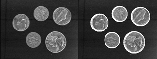
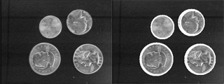

Hough dönüşümü ile dairesel şekil tespiti
December 11, 2010Sayısal görüntülerde geometrik şekil bulmanın görüntü işlemede birçok uygulama alanı bulunmaktadır. İris bulma, plaka bulma, saha üzerinde top bulma ve benzeri uygulamalar buna örnek olarak verilebilir.
Bir kamera veya benzeri bir algılayıcı yardımı ile elde edilen görüntülerdeki şekillerin her zaman eksiksiz yer alması mümkün olmamaktadır ve şekillerdeki kopukluklar şekil tespitini zorlaştırmaktadır. Bu noktada hough dönüşümü ile görüntünün tamamının görülebilir olmadığı durumlarda da olası şekiller tespit edilebilmektedir. Bu çalışmada şekil bulmada kullanılan hough dönüşümünün dairesel şekil tespitinde kullanımı üzerinde durulmuştur.
Hough dönüşümü temelde kenarların olası geometrik şekilleri oylaması mantığı ile çalışmaktadır. Hough dönüşümü kullanılarak şekil tespiti genel olarak aşağıdaki adımlar ile özetlenebilir:
- Kaynak görüntü üzerinde kenarlar belirlenir.
- Bir eşikleme yöntemi kullanılarak görüntü ikili (siyah-beyaz) hale getirilir.
- Her kenar pikseli için noktanın üzerinde olabileceği olası geometrik şekillerin polar koordinattaki değerleri kullanılan bir akümülatör matrisi üzerinde birer artırılarak her kenar pikselin olası şekilleri oylaması sağlanmış olur.
- Akümülatör değeri en yüksek olan şekiller en çok oy alan şekiller olduklarından görüntü üzerinde bulunma veya belirgin olma olasılıkları en yüksek olmaktadır.
- Bulunan şekiller isteğe bağlı olarak görüntü üzerine yazdırılabilir.
Bu çalışmada kaynak görüntüler üzerinde dairesel şekil arandığından kullanılan akümülatör matrisi çemberin merkezi olan [a,b] noktaları ve yarıçap değeri [r] olmak üzere üç boyuttan oluşmaktadır. Belirlenen aralıktaki yarıçap değerleri için çember merkezi çember denkleminden faydalanılarak bulunabilir.
- r2 = ( x – a )2 + ( y – b )2
- x = a + r×sin(θ)
- y = b + r×cos(θ)
Kullanılan açı değeri 0 - 2π aralığında değiştirilerek bir noktanın, yarıçapı bilinen bir çember üzerinde yer alıp almadığı tespit edilebilmektedir. Yarıçap değerinin bilinmesi durumunda çember merkezini ifade eden [a,b] değerlerinin iki boyutlu bir akümülatör matrisi üzerinde tutulması yeterli olacaktır. Yarıçap değerinin bilinmemesi veya bir aralık halinde olması durumunda ise olası yarıçap değerleri bir döngü içerisinde denenerek merkez koordinatları ve yarıçap uzunluğu boyutlarına (a,b,r) karşılık gelen akümülatör değerleri artırılarak elde edilen üç boyutlu akümülatör matrisi elde edilebilmektedir.
Uygulama
Bu uygulamada kenar belirlemede Sobel filtresi kullanılmıştır. İki boyutlu konvolüsyon ile Sobel filtresi görüntüye uygulanmış ve kenarlar belirlenmiştir. Adaptif eşikleme yöntemi kullanılarak görüntü siyah beyaz hale getirilmiştir. Olası çemberlerin yarıçap aralığı ve şekil belirlemede kullanılan akümülatör eşik değeri parametre olarak alınmıştır.
Uygulamalarda yalnızca istenen yarıçap aralığındaki çemberlerin aranması ile hem istenmeyen şekillerin bulunması önlenmiş hem de başarımda iyileştirme sağlanmıştır. Arama adımı değerinin parametrik olarak alınması ile başarım ile kesinlik arasındaki dengenin kullanıcı tarafından belirlenebilmesi sağlanmıştır. Adım değerinin yüksek verilmesi ile daha hızlı sonuçlar, düşük verilmesi ile daha kesin sonuçlar elde edilebilmektedir.
Aşağıdaki örneklerde solda orijinal görüntüler ve sağda hough dönüşümü ile çemberlerin belirlendiği görüntüler yer almaktadır. Çemberler beyaz renk ile vurgulanmıştır.
 
Görüntü işleme, Programlama, En çok okunan yazılar